版本： 2.0
更新日期： 2026年3月3日
作者： Nick Chen
InfinityMind AI 是一個企業級的 AI 知識問答系統，支援：
- 🤖 多機器人實例（5 個獨立 Bot）
- 💬 多渠道整合（LINE / Teams / WebChat）
- 📚 RAG 知識檢索
- 🔐 完整權限管理（用戶/角色/資料夾/文檔分級）
- 🖼️ 圖片辨識功能（Azure Vision API）
- 🌓 深色/淺色主題切換- 🌐 內外部共用：同時支援內部員工與外部訪客，灵活切換驗證模式
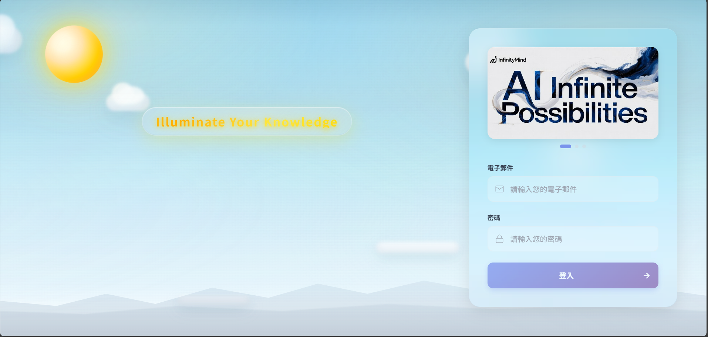
本地帳號登入
- 輸入 Email 和密碼
- 系統唯一登入方式
- 需由管理員建立帳號
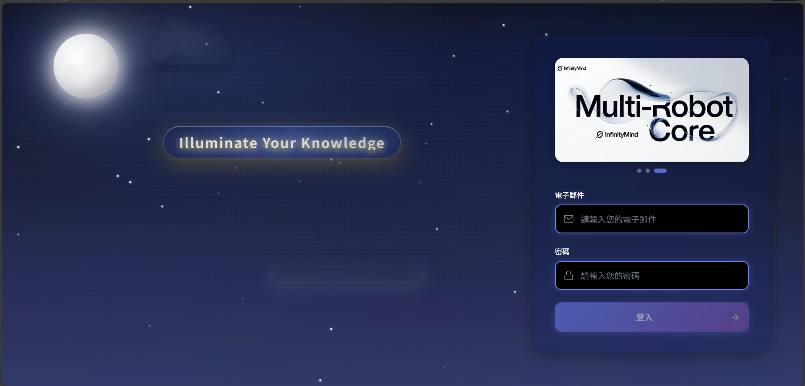
特色：
- ✅ 支援企業 Logo 自訂
- ✅ 背景圖片可配置
- ✅ 登入提示文字可修改
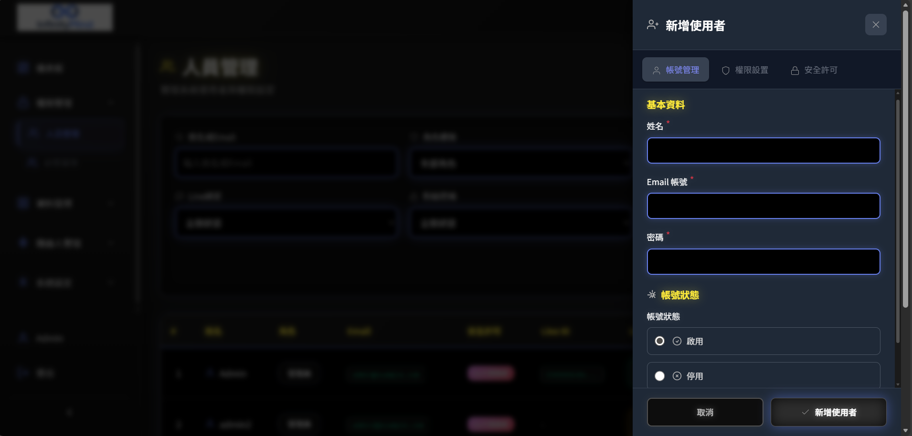
必填欄位：
- 📧 Email：系統唯一識別碼
- 👤 姓名：使用者顯示名稱
- 🔑 密碼：本地帳號登入密碼
選填欄位：
- 📱 LINE ID 綁定：綁定 LINE 渠道
- 💼 部門：組織架構管理
- 📊 帳號狀態：啟用/停用
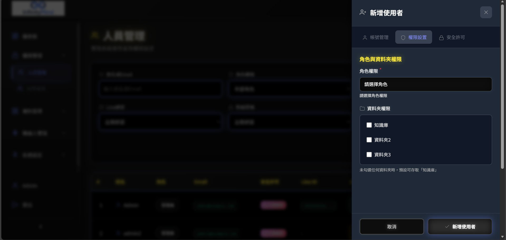
權限配置項目：
權限繼承規則：
管理員 > 一般用戶 > 訪客
↓ ↓ ↓
全部權限 指定權限 唯讀
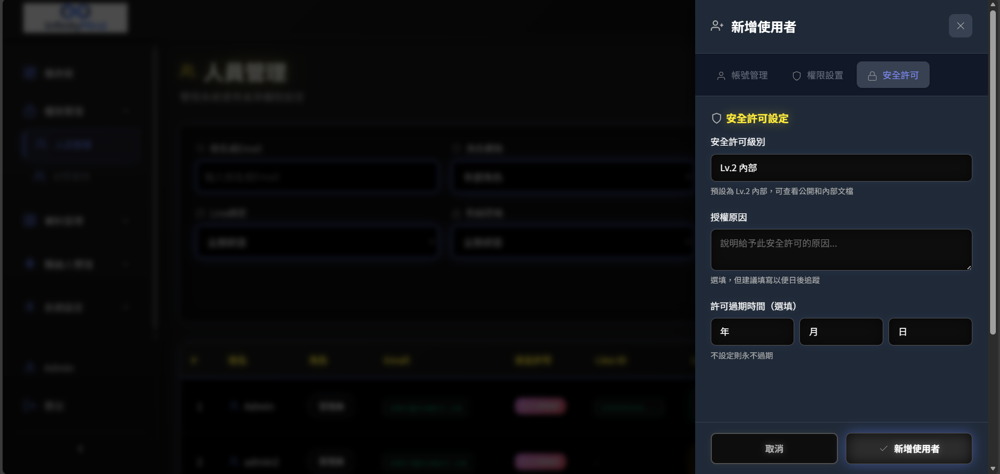
安全分級制度（4 級）：
| 級別 | 名稱 | 標籤 | 說明 |
|---|---|---|---|
| Level 1 | 公開 | 🌐 Public | 無限制文檔 |
| Level 2 | 內部 | 🏢 Internal | 企業內部文檔 |
| Level 3 | 機密 | 🔒 Confidential | 敏感業務資料 |
| Level 4 | 極機密 | 🔐 Secret | 最高機密文檔 |
設定項目：
- 📋 安全許可級別：選擇 1-4
- 📅 授權日期：許可生效時間
- ⏰ 過期日期：許可失效時間（可選）
- 👤 授權人員：記錄核准者
- 📝 授權原因：稽核用途
存取規則：
使用者許可級別 ≥ 文檔分級 → 可存取
使用者許可級別 < 文檔分級 → 拒絕存取
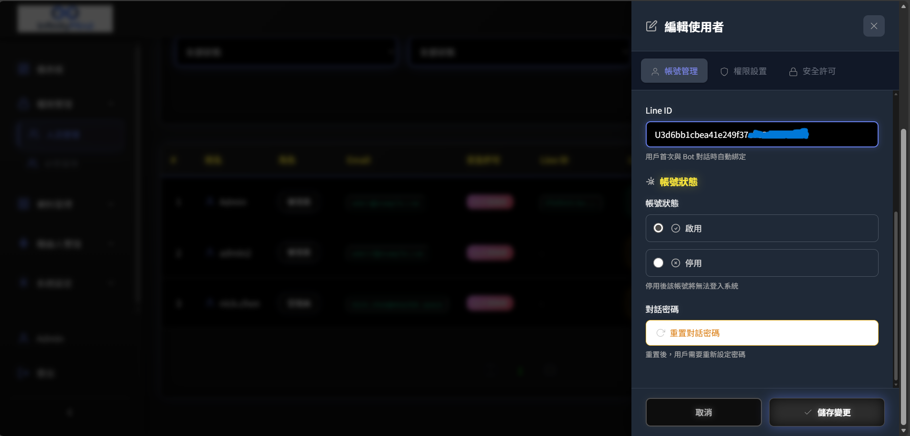
可修改項目：
- 🔐 安全許可級別
- 📁 資料夾權限
- 🤖 Bot 訪問權限
- 🔒 帳號狀態（啟用/停用）
- 💬 渠道密碼狀態：顯示是否已設定 LINE/WebChat 對話密碼
安全提示：
⚠️ 修改權限後立即生效，使用者下次查詢時會套用新權限。
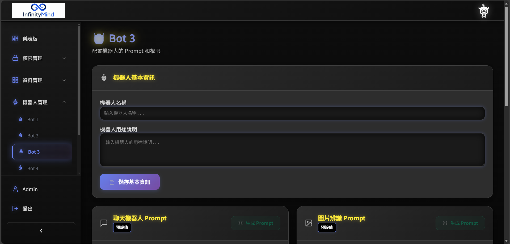
支援多 Bot 實例：
- 🤖 Bot 1 ~ Bot 5：5 個獨立機器人
- 🎯 獨立配置：各自擁有專屬設定
- 🔑 獨立認證：每個 Bot 有獨立的 Azure Bot Service 憑證
適用場景：
- 📊 部門隔離：不同部門使用不同 Bot
- 🌍 多語言支援：中文 Bot / 英文 Bot
- 🎭 角色專業化：HR Bot / IT Bot / Sales Bot
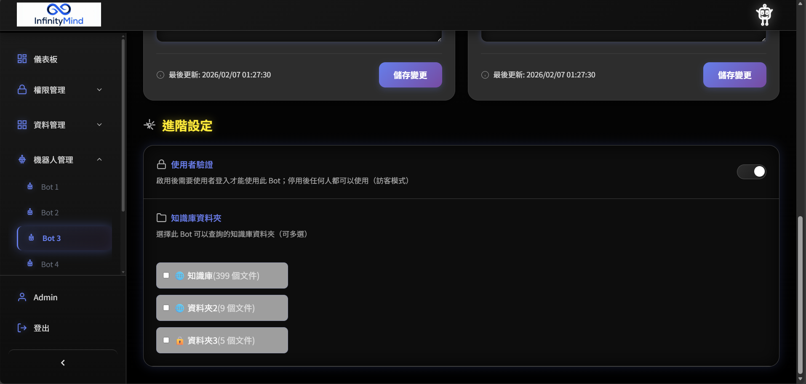
配置項目：
範例配置：
Bot 1 (HR) → 掛載：人事資料夾、公告資料夾
Bot 2 (IT) → 掛載：技術文檔、操作手冊
Bot 3 (Sales) → 掛載：產品資訊、銷售資料
決策建議：
內部敏感資料 Bot → 啟用驗證 ✅
公開客服 Bot → 停用驗證 ❌
資料夾屬性配置：
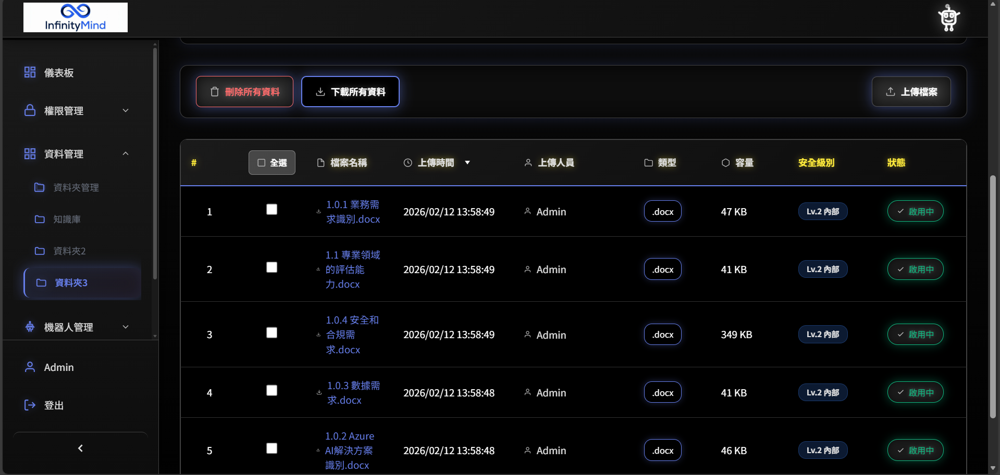
文件列表功能：
- 📄 檔案名稱：上傳的原始檔名
- 📅 上傳日期：建立時間
- 👤 上傳者：記錄操作人員
- 📏 檔案大小：空間使用統計
- ⚙️ 操作：編輯、刪除、下載
支援檔案格式：
文件：.pdf, .docx, .txt, .md
試算表：.xlsx, .csv
簡報：.pptx
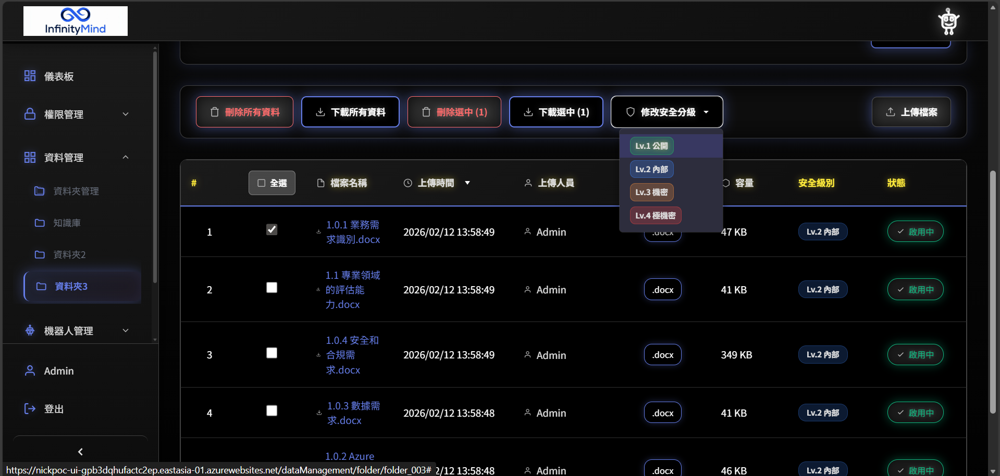
單一文件安全分級：
每個文檔可設定獨立的安全級別：
- 🌐 Level 1 - Public：公開文檔
- 🏢 Level 2 - Internal：內部文檔
- 🔒 Level 3 - Confidential：機密文檔
- 🔐 Level 4 - Secret：極機密文檔
分級變更記錄：
- 📝 變更時間：自動記錄
- 👤 操作人員：稽核追蹤
- 💬 變更原因：必填說明
分級影響：
使用者查詢時，系統會：
1. 檢查使用者安全許可級別
2. 過濾出可存取的文檔
3. 僅檢索符合權限的內容
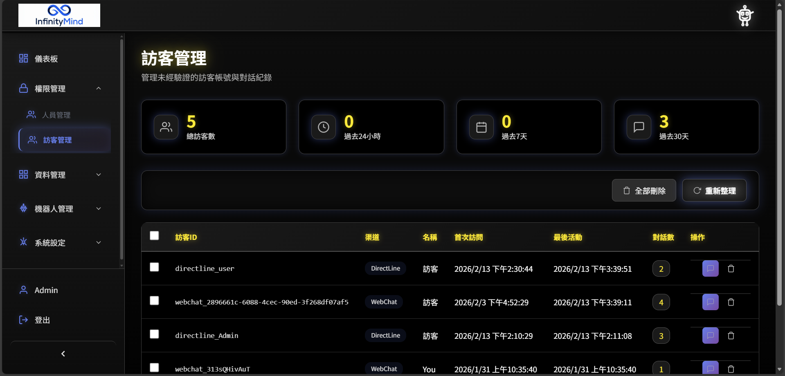
訪客模式功能：
當 Bot 設定為「停用使用者驗證」時，系統會：
- 🎭 自動建立訪客帳號：格式 guest_<channel>_<user_id>
- 📊 追蹤對話紀錄：完整保留對話歷史
- 🔍 管理介面查看：管理員可監控訪客使用狀況
內外部共用特色：
- 🏢 內部使用：開啟驗證 → 員工登入後使用，享有完整權限控制
- 🌐 外部客服：停用驗證 → 訪客免登入使用，Bot 成為 24/7 智能客服
- 📈 大數據分析：訪客對話可用於：
- 熟門問題分析
- 用戶行為模式挖掘
- FAQ 優化依據
- 知識庫缺口發現
訪客資訊顯示：
- 🆔 訪客 ID：系統自動生成
- 💬 渠道：LINE / Teams / WebChat
- ⏰ 首次對話時間
- 📈 對話次數：統計總互動數
- 🕐 最後對話時間
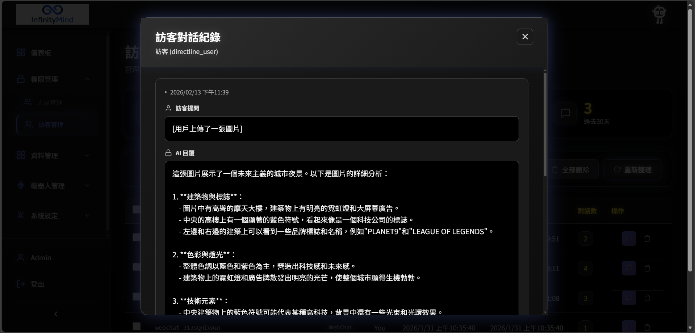
對話歷史查詢：
點擊訪客後可查看：
- 💬 完整對話內容：問題與回答
- 🕒 時間戳記：精確到秒
- 🤖 使用的 Bot：Bot 1 ~ 5
- 📚 引用文檔：RAG 檢索的參考資料
- 🎯 Prompt 名稱：使用的系統提示詞
分析功能：
- 📊 熱門問題統計
- 🎭 訪客行為分析
- 💡 改進建議：發現知識庫缺口- 📈 大數據應用：
- 訪客對話數據可匯出分析
- 識別用戶需求趨勢
- 優化客服回答策略
- 提升 Bot 準確率
數據分析主頁面
系統提供完整的訪客數據視覺化分析，幫助您深入了解訪客行為、發現知識庫缺口、優化FAQ內容。
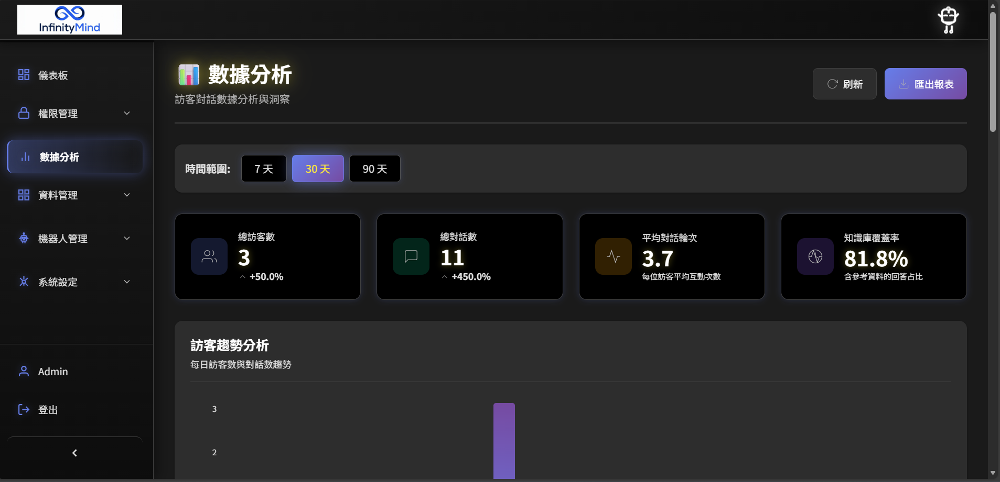
1. 訪客趨勢分析
- 📈 每日訪客數趨勢圖
- 📊 對話數量變化追蹤
- 🔄 自動計算與前期對比增長率
- 📅 支援 7 天、30 天、90 天時間範圍
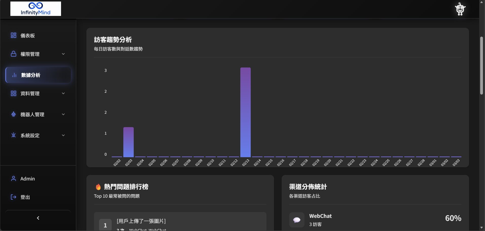
2. 熱門問題排行榜
- 🔥 Top 10 最常被問的問題
- 📊 顯示問題出現次數
- 🌐 標示問題來源渠道（WebChat、LINE、Teams）
- 💡 幫助快速識別高頻需求
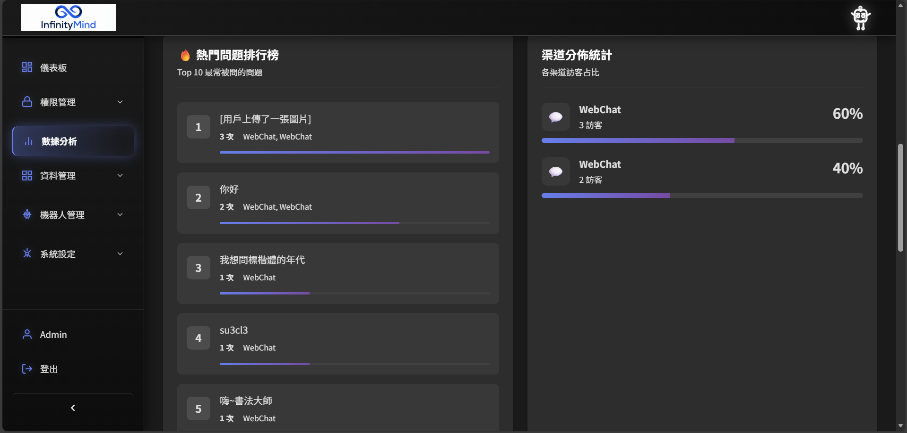
3. 知識庫缺口分析
- 🔍 自動識別無參考資料的高頻問題
- ⚠️ 標示需要補充文檔的問題
- 📈 顯示問題出現次數排序
- ✅ 提供「新增文檔」快速操作建議
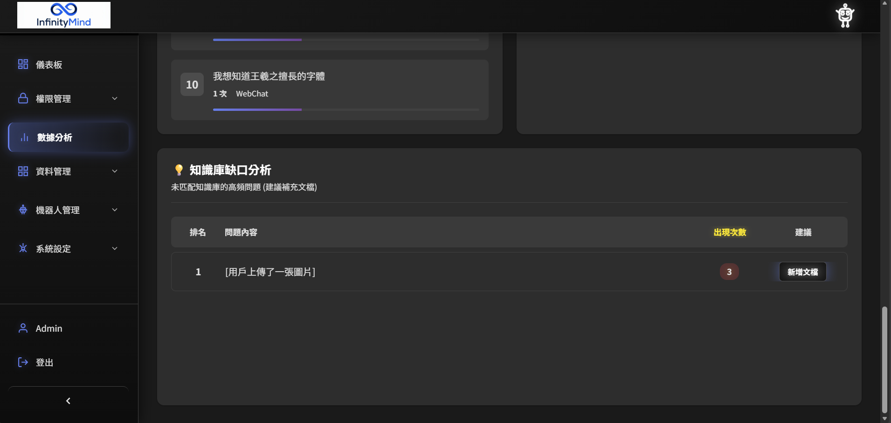
4. 數據匯出功能
- 📥 一鍵匯出 CSV 格式報表
- 📊 包含核心指標、熱門問題、渠道分佈、知識庫缺口等完整數據
- ✅ 完美支援 Excel 開啟（UTF-8 編碼，無亂碼）
- 📅 自動標記報表生成時間
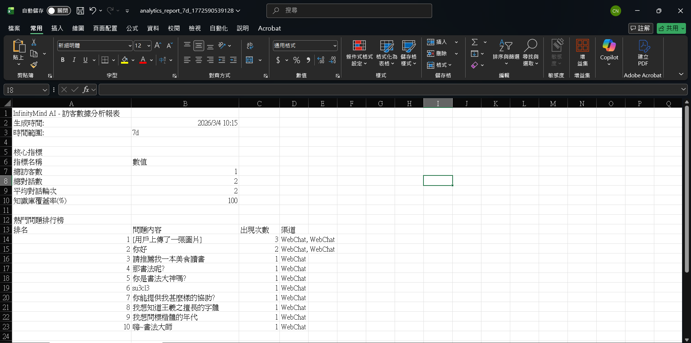
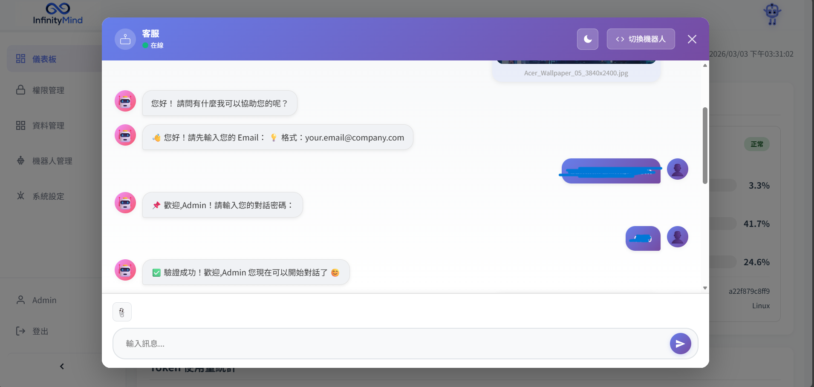
WebChat 認證流程：
步驟 1： 輸入 Email
使用者: john@company.com
Bot: ✅ Email 確認，請輸入您的對話密碼：
步驟 2： 輸入密碼
使用者: [輸入密碼]
Bot: ✅ 驗證成功！歡迎，John
您現在可以開始對話了 😊
首次使用：
Bot: 🔐 請設定您的對話密碼：
💡 密碼將用於後續登入，請妥善保管。
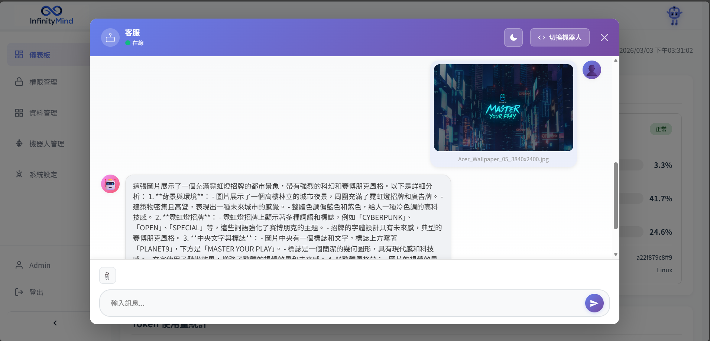
圖片上傳功能：
分析範例：
使用者: [上傳書籍封面]
Bot: 這本書的書名是《從心解脫：數位時代的心靈降躁法》
由格龍仁波切所著，商周出版。
封面設計採用寧靜的湖泊與山景...
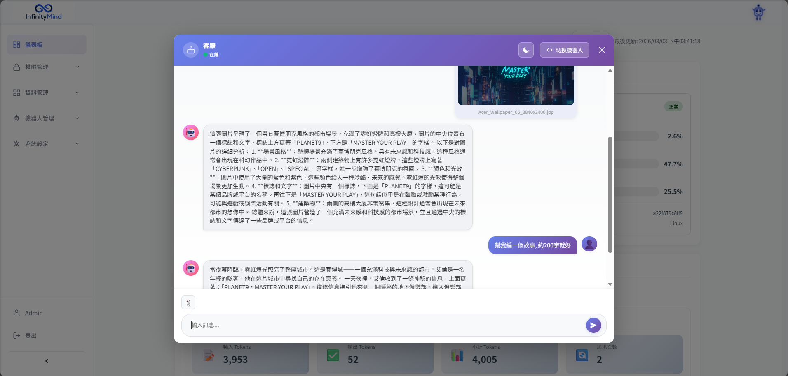
對話連續性：
系統會保留圖片辨識結果作為對話上下文：
輪次 1：
使用者: [上傳圖片]
Bot: [圖片識別] 這是一本關於冥想的書籍...
輪次 2：
使用者: 這本書適合初學者嗎？
Bot: 根據剛才的圖片，這本《從心解脫》確實適合初學者。
它提供了簡單的入門練習...
智能整合：
- 🧠 圖片+RAG：結合圖片識別與知識庫檢索
- 🔍 自動驗證：RAG 檢索驗證圖片識別準確性
- 💬 上下文記憶：保留 3 輪對話（3 分鐘內）
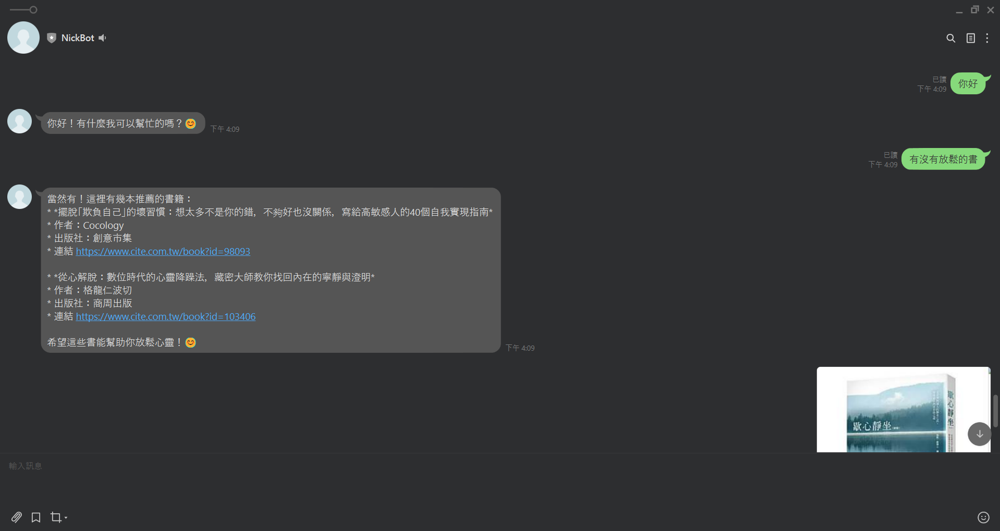
LINE 渠道整合：
文字問答：
使用者: 公司的請假流程是什麼？
Bot: 根據人事規章，請假流程如下：
1. 登入人事系統
2. 填寫請假單...
📚 參考文件：《員工手冊 v2.3》
圖片辨識：
使用者: [傳送產品照片]
Bot: 這是 Model X-2000 智能手錶
主要功能包括：心率監測、睡眠追蹤...
LINE 特色功能：
- 📱 推播通知：即時回應
- 🔗 Rich Menu：快速功能選單
- 🎨 Flex Message：豐富訊息卡片
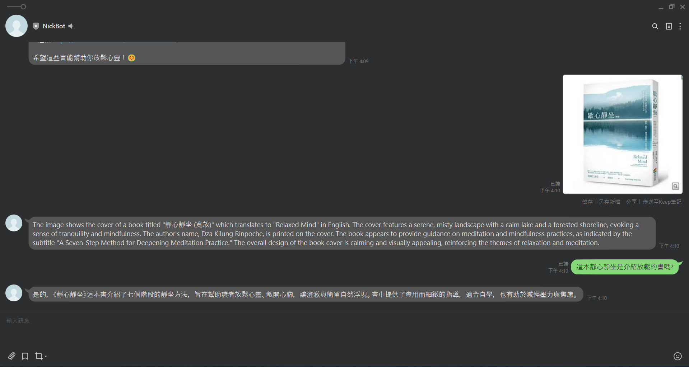
對話記憶展示：
輪次 1：
使用者: 我叫 Nick
Bot: 你好，Nick！很高興認識你 😊
輪次 2：
使用者: 我的名字是？
Bot: 你叫 Nick
輪次 3：
使用者: [上傳文件照片]
Bot: 這是一份合約文件，包含...
輪次 4：
使用者: 剛才那份文件的有效期限？
Bot: 根據剛才的圖片，合約有效期限為...
記憶機制：
- ⏰ 3 分鐘內：保留最近 3 輪對話
- 🔄 自動清理：超時或超過 3 輪後移除舊對話
- 💾 完整記錄：所有對話永久保存在 MongoDB
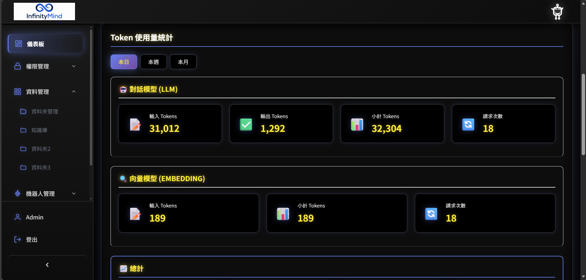
Token 使用監控：
- 📊 即時用量：顯示當前 Token 消耗
- 📈 歷史趨勢：每日/每週/每月統計
- � 使用明細：查看各 Bot 的 Token 使用量
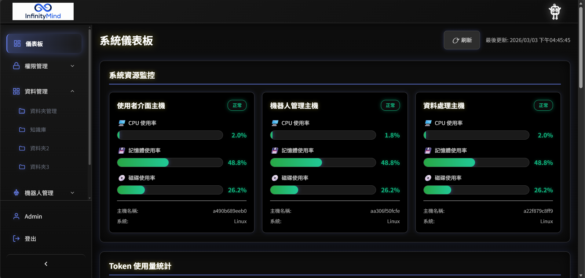
系統資源監控：
- 🖥️ CPU 使用率：即時負載狀態
- 💾 記憶體使用：RAM 佔用情況
- 💿 磁碟空間：儲存空間剩餘
- 🌐 網路流量：輸入/輸出頻寬
效能指標：
正常狀態：CPU < 70%, Memory < 80%
警告狀態：CPU 70-90%, Memory 80-90%
異常狀態：CPU > 90%, Memory > 90%
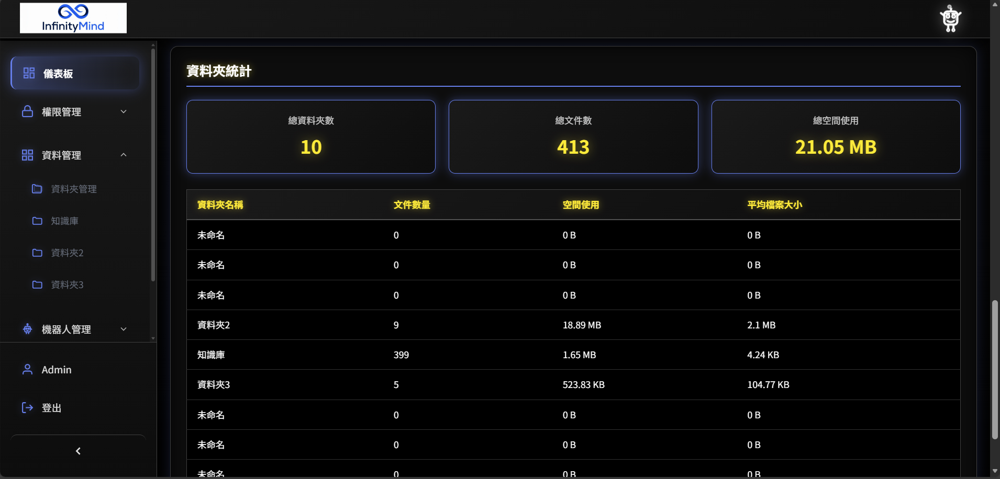
儲存空間分析：
- 📁 資料夾大小排行：找出最佔空間的資料夾
- 📊 文件數量統計：每個資料夾的文檔數
- � 總空間使用：即時顯示系統整體儲存使用狀況
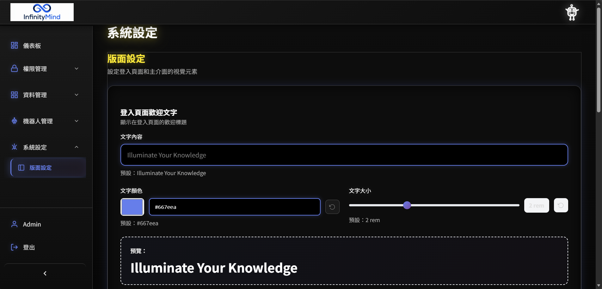
主題切換功能：
設定項目：
外觀設定：
├─ 主題模式：淺色/深色
├─ 主色調：藍色/綠色/紫色...
├─ 側邊欄風格：展開/收合
└─ 動畫效果：啟用/停用
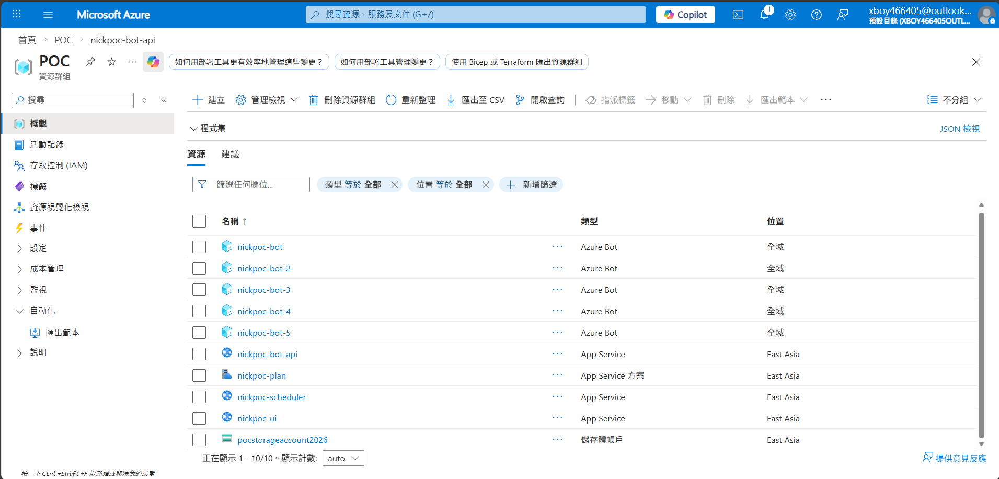
InfinityMind AI 使用的 Azure 服務：
註：實際使用費用依據系統流量及用量而定，建議根據實際需求自行評估。
| 功能 | Windows | Mac |
|---|---|---|
| 新增使用者 | Ctrl + N |
⌘ + N |
| 搜尋 | Ctrl + F |
⌘ + F |
| 儲存 | Ctrl + S |
⌘ + S |
| 切換主題 | Ctrl + T |
⌘ + T |
Q1: 忘記密碼怎麼辦？
聯繫管理員重設密碼。
Q2: Bot 回應很慢？
檢查 Azure OpenAI 配額限制，或增加 RPS。
Q3: 圖片無法上傳？
確認檔案大小 < 10MB，格式為 JPG/PNG。
文件版本歷史：
- v2.0 (2026-03-03) - 新增圖片功能、多 Bot 支援
- v1.5 (2026-02-15) - 新增安全分級
- v1.0 (2026-01-10) - 初版發佈